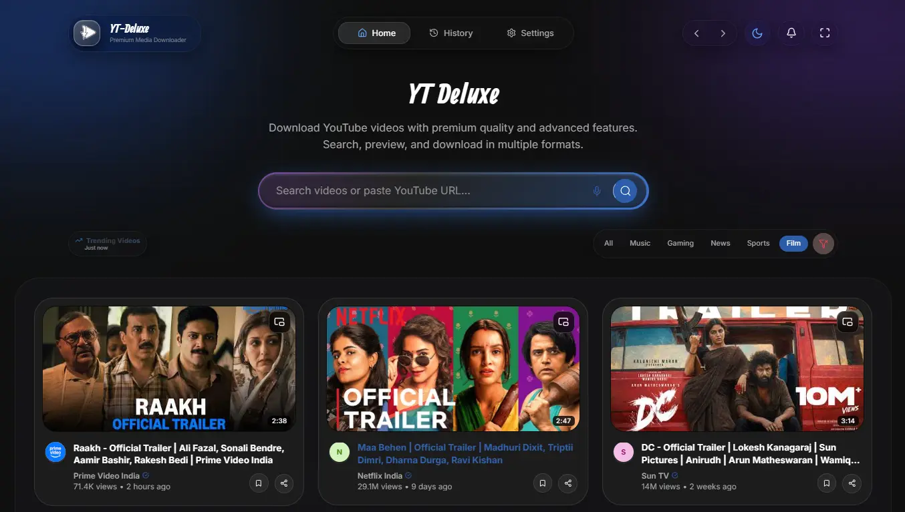
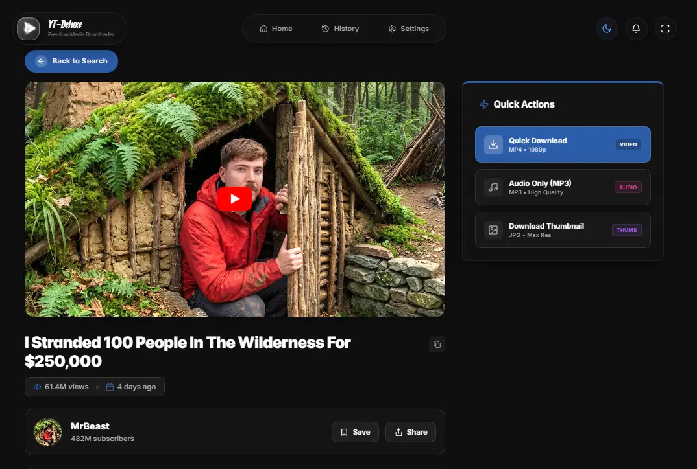
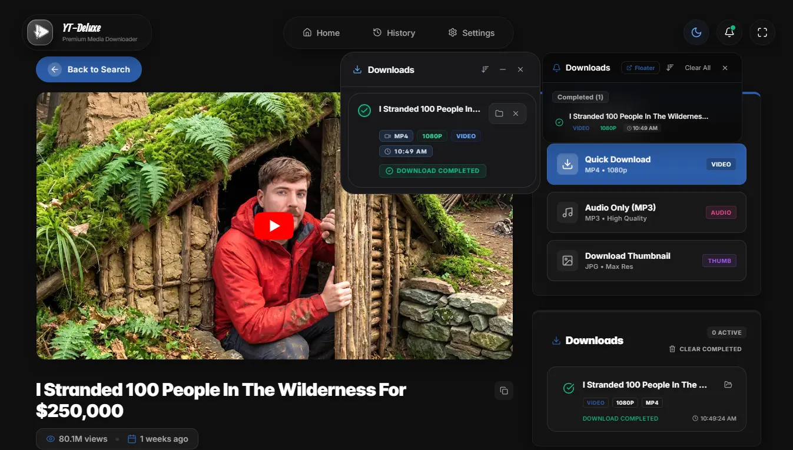
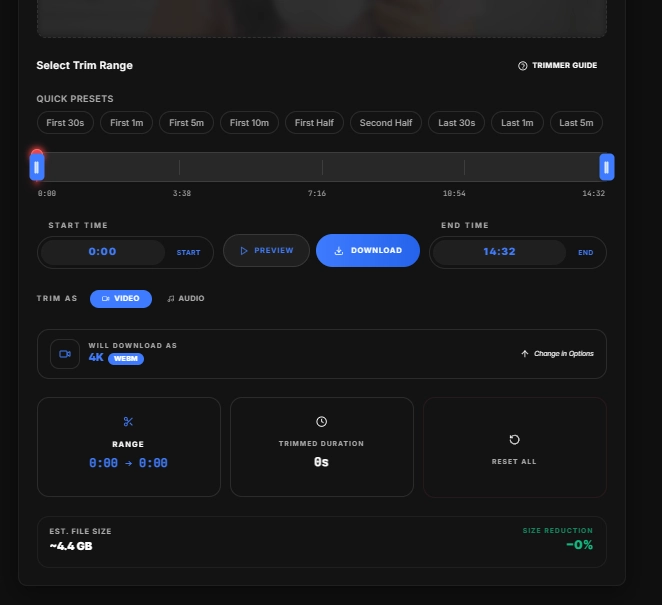
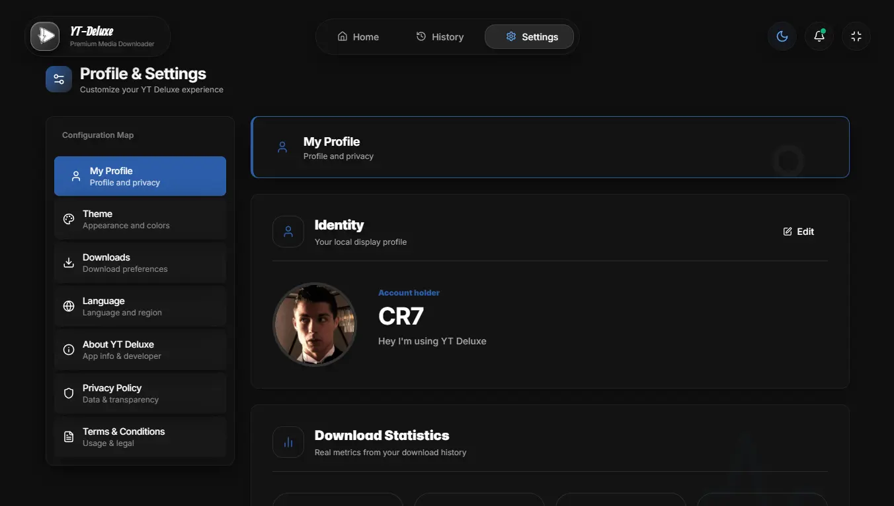
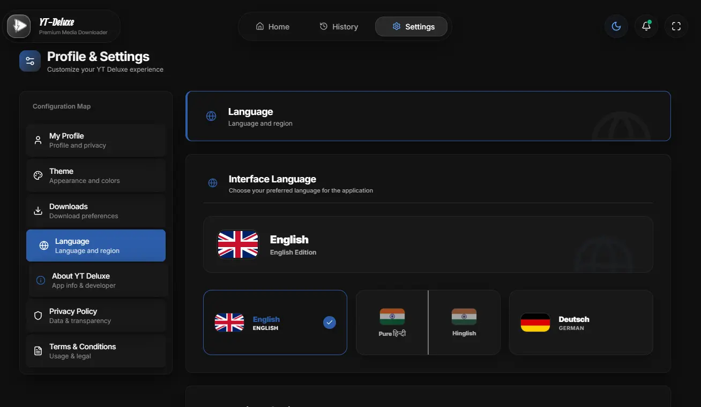
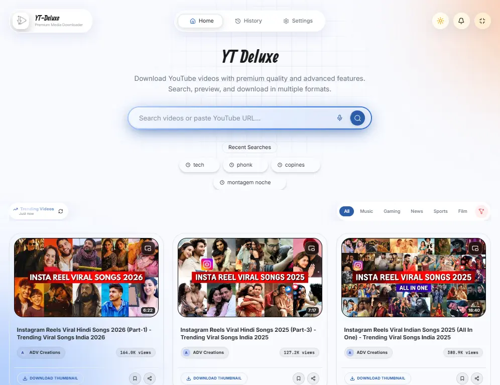
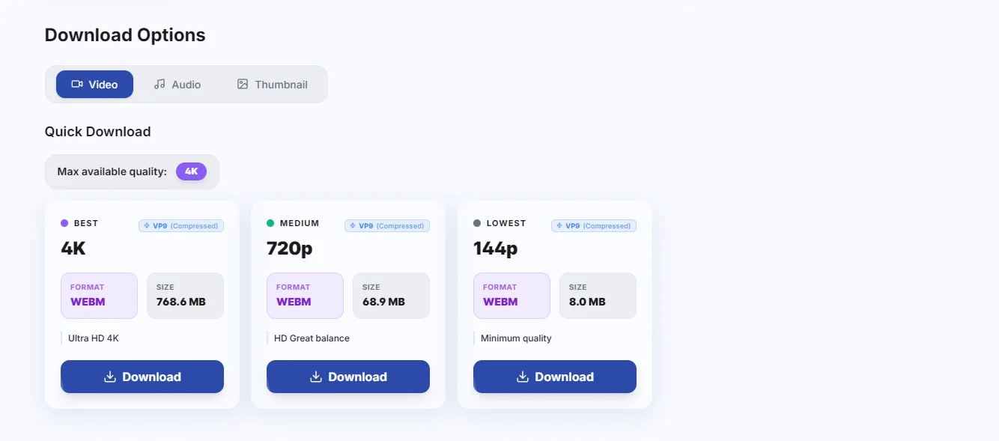
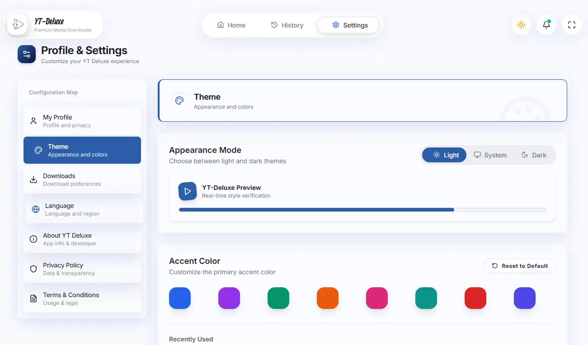

YT Deluxe
Premium Media Downloader
Premium Media Downloader
Zero-cost, exceptionally fast, and beautifully designed. Download video and audio in pristine quality with a single click.
It's totally Free & Open source.
Free & Open Source | Powered by yt-dlp & ffmpeg

A powerful suite of tools elegantly packaged into one application.
Download in full fidelity, supporting up to 8K resolution at high frame rates with HDR.
Seamlessly convert videos to high-bitrate MP3, FLAC, or Opus files for your library.
Clip only the segments you need before downloading, saving storage and time.
Full internationalization support with community-led translations for multiple languages.
Modern design utilizing backdrop blurs and fluid animations for a deluxe feel.
No tracking, no accounts, and no data collection. All processing happens locally.
A glimpse into the sleek Liquid Glass interface.


















Get YT-Deluxe today and experience the fastest, most reliable way to save media offline.
| OS | Windows 10 / 11 (64-bit) |
| RAM | 4 GB minimum |
| Disk Space | ~200 MB |
| Internet | Required for downloads |
| Runtime | WebView2 (auto-install) |
Click the download button above to get the latest `YT-Deluxe-Setup.exe` file.
Open the downloaded file and follow the standard Windows installation wizard.
Launch YT-Deluxe from your Start menu or desktop shortcut and start downloading.
Yes. YT-Deluxe is 100% free and always will be. It's open-source under the GNU General Public License v3.0. No subscriptions, no premium tiers, no hidden fees. Ever.
No. We believe in privacy first. YT-Deluxe does not collect, store, or transmit any of your personal data or usage metrics. All processing happens locally on your machine.
yt-dlp is a powerful, open-source command-line media downloader. YT-Deluxe acts as a premium Graphical User Interface (GUI) wrapper around yt-dlp, making its advanced features accessible to everyone without needing to use the terminal.
Yes! As long as the source video is available in 4K or 8K, YT-Deluxe can download it in full fidelity, including HDR and high frame rates (60fps).
YT-Deluxe is 100% safe and open-source, allowing anyone to audit the code. However, because it is a new standalone executable, some aggressive antivirus software might temporarily flag it as "unrecognized". This is a false positive.
You can report bugs or request new features directly on our GitHub repository's Issues page. We actively welcome community feedback and contributions!